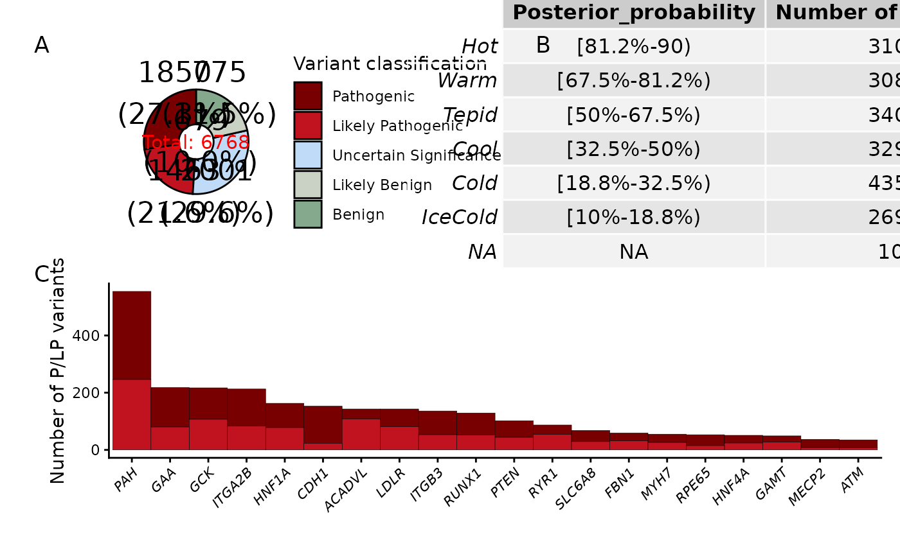

Visualize the distribution of variants
multi_plot.RdVisualize the distribution of variants
Arguments
- data
DataFrame comprising fundamental variant information, evidence labeling, and classification details
- classification_col
The column name for variant classification (str)
- gene_col
The column name for the gene where the variant is located(str)
- consequence_col
The column name for the annotation results of variant consequences(str)
Examples
data("ClinGen_dataset")
ClinGen_dataset <- add_info(ClinGen_dataset, "Assertion")
ClinGen_dataset <- VUS_classify(ClinGen_dataset, "Assertion", "Applied Evidence Codes (Met)")
multi_plot(ClinGen_dataset, "Assertion", "HGNC Gene Symbol")
#> Scale for fill is already present.
#> Adding another scale for fill, which will replace the existing scale.
#> Joining with `by = join_by(VUS_temperature_scale)`
#> Warning: The `<scale>` argument of `guides()` cannot be `FALSE`. Use "none" instead as
#> of ggplot2 3.3.4.
#> ℹ The deprecated feature was likely used in the BayesQuantify package.
#> Please report the issue to the authors.
